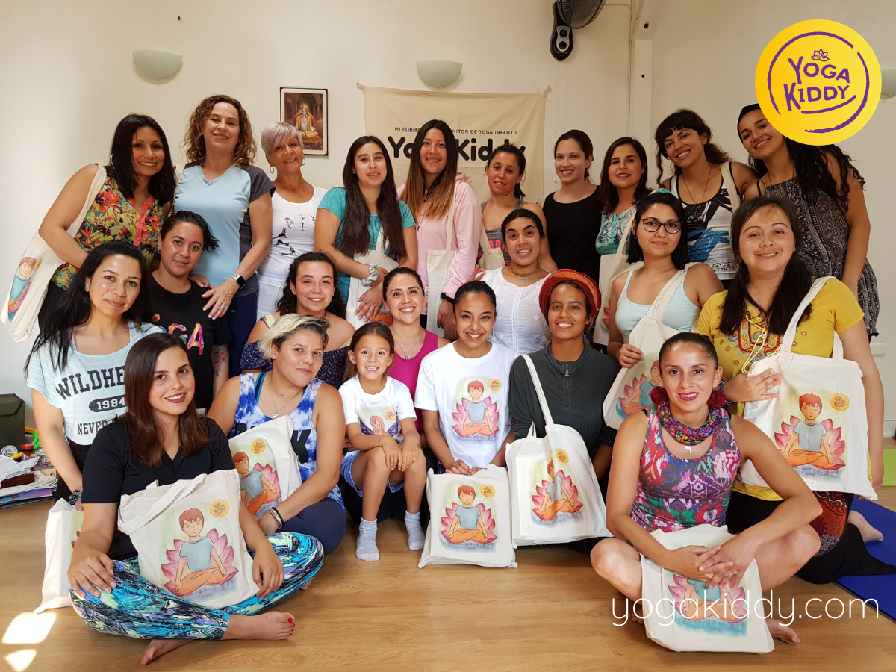
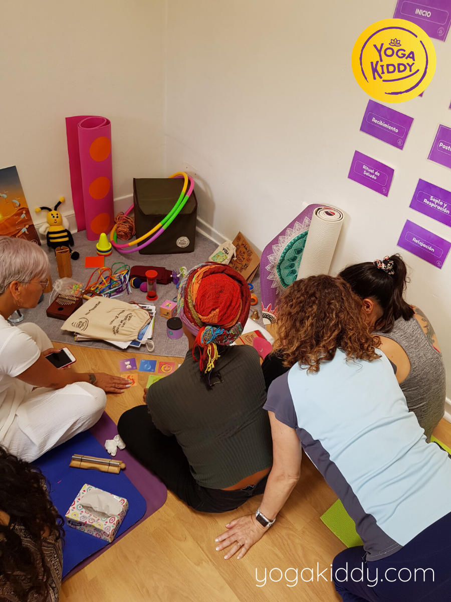
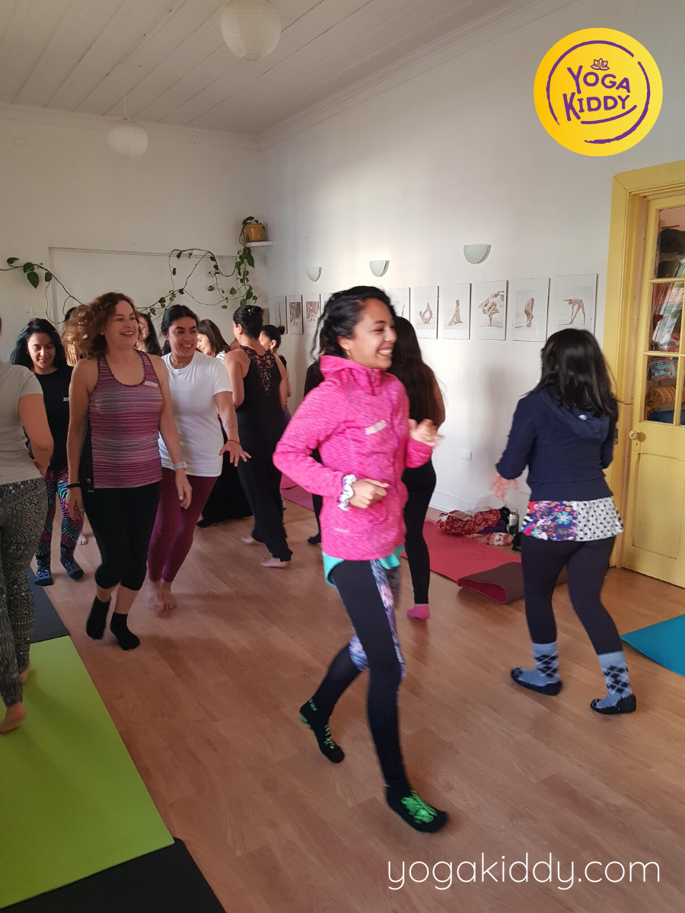
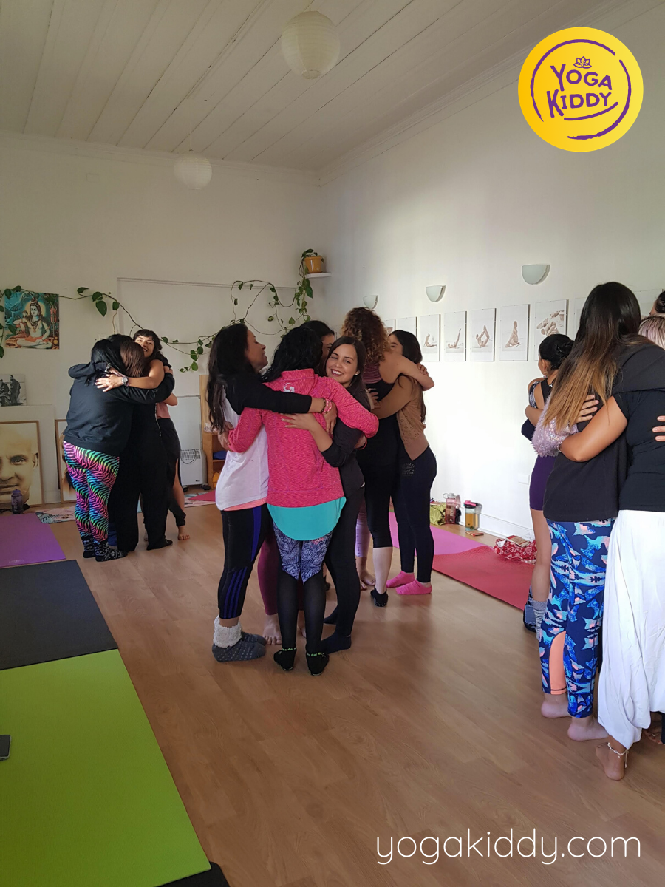
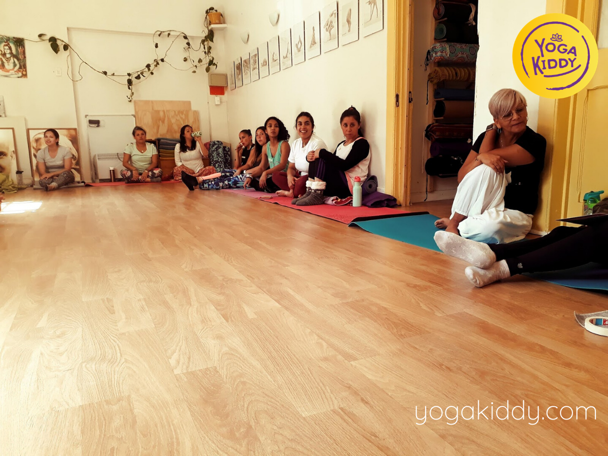
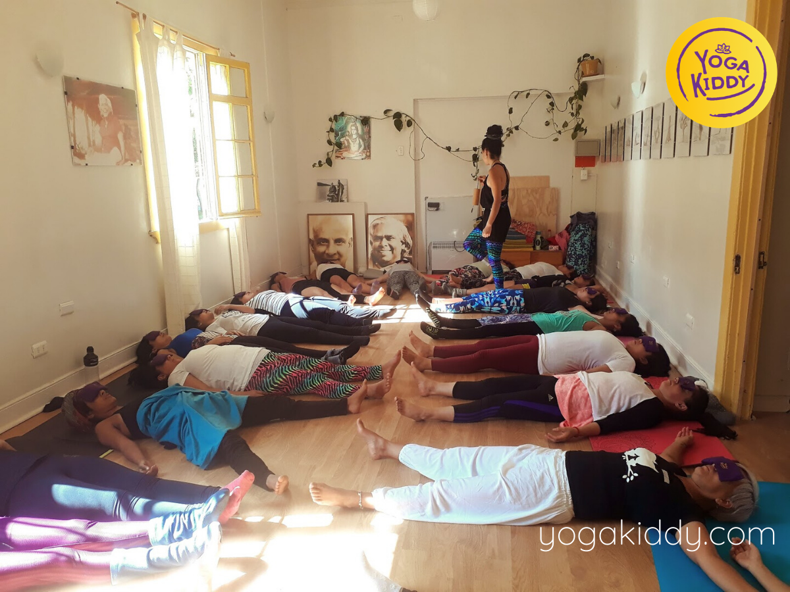
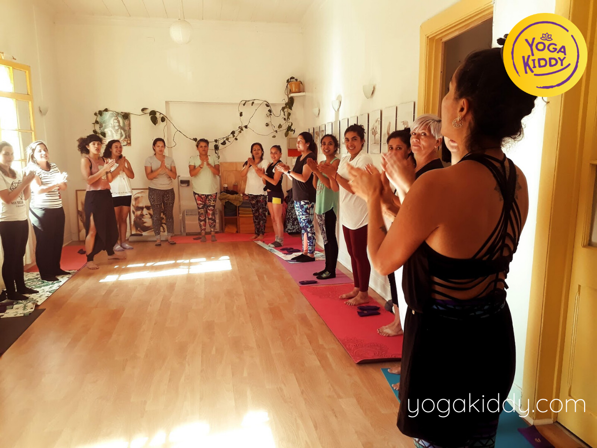
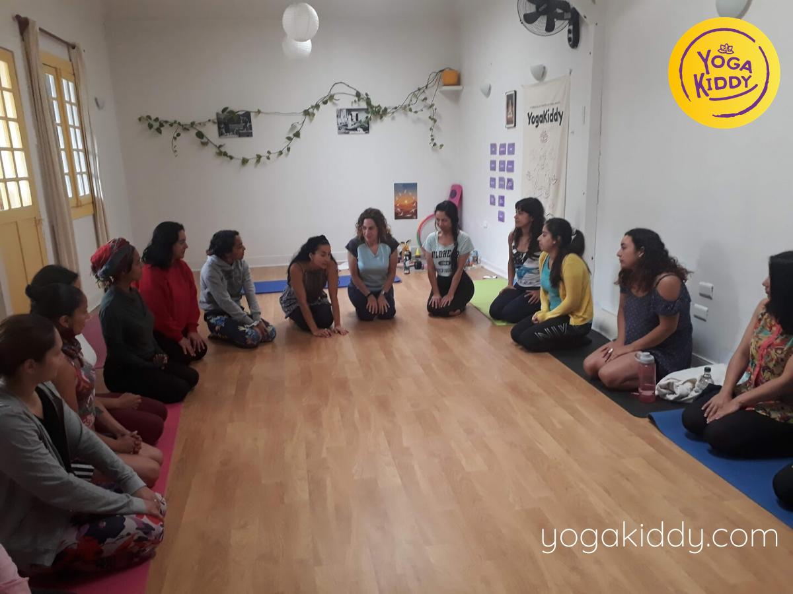

Este fin de semana nos encontró capacitándonos nuevamente en la hermosa ciudad de Viña del Mar 🙏
☆
Agradecemos a este maravilloso grupo de mujeres que eligieron integrar esta formación y buscar mejores herramientas para brindarles un mundo mejor a sus niños 🧘♂️🧘♀️
☆
Gracias a todas ellas por participar y entregarse al aprendizaje 💜







Testimonios:
Hola mi nombre es Romina, soy educadora de de párvulo y vine a esta formación de monitor en yoga infantil y se lo recomiendo totalmente. Me voy con una gama de actividades, de ideas, una cajita de sorpresa para poder realizar experiencias con mis niños desde los 3 hasta los 6 años y aún más fuera de casa hasta los 12. Se los recomiendo! Las formadoras Peggy y Madhu son excelentes, pacientes y la calidad humana se nota
Hola soy Juliana, soy de Bogotá, Colombia y vine a la formación de monitor en yoga infantil con mucha expectativa de aprender a contar historias a partir del yoga. Y la verdad me voy contenta, con una cajita de herramientas. Las formadoras, el espacio todo realmente de una gran calidad. Me voy con una gran sonrisa y de verdad con muchas ganas no solo de aplicarlo sino de seguir aprendiendo sobre niños, sobre yoga y sobre esta vida tan creativa que tenemos.
Hola soy Cynthia soy profesora de ingles y además ingresé al yoga por el Kundalini. Tome la decisión porque vi el anuncio en instagram de YogaKiddy y me encantó! Estos dos días de formación fueron dos días de crecimiento personal a full! Las instructoras son entregadas, dedicadas y todo el material, toda la experiencia y la rutina que me llevo conmigo, me la llevo con mucho amor. Muchas gracias y están muy invitadas de participar de estos cursos.
Hola soy Camila profesora de educación física y creadora de universo vawel. Con las actividades recreativas aquí aprendí mucho con YogaKiddy, agradezco demasiado la entrega y la confianza para enseñarnos todo lo que tenían a mano. Muchas gracias
Descubre las fechas de nuestras próximas Formaciones de yoga para niños